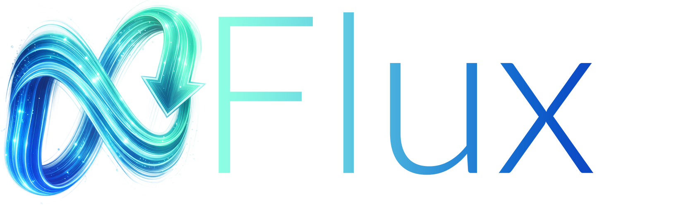

Search
Connect your News Server, search for NZBs, apply result defaults, and send releases directly to SABnzbd+.

Search NZBs, browse RSS feeds, and manage your SABnzbd+ queue from a focused iOS companion app.
Connect your News Server, search for NZBs, apply result defaults, and send releases directly to SABnzbd+.
Browse configured feeds with cached artwork and tap any feed item to search for matching releases.
Pause, resume, reorder, prioritize, delete queue items, and review download history in one place.